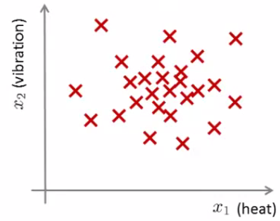

15: Anomaly Detection
Anomaly detection - problem motivation
- Anomaly detection is a reasonably commonly used type of machine learning application
- Can be thought of as a solution to an unsupervised learning problem
- But, has aspects of supervised learning
- What is anomaly detection?
- Imagine you're an aircraft engine manufacturer
- As engines roll off your assembly line you're doing QA
- Measure some features from engines (e.g. heat generated and vibration)
- You now have a dataset of x1 to xm (i.e. m engines were tested)
- Say we plot that dataset

- Next day you have a new engine
- An anomaly detection method is used to see if the new engine is anomalous (when compared to the previous engines)
- If the new engine looks like this;

- Probably OK - looks like the ones we've seen before
- But if the engine looks like this

- Uh oh! - this looks like an anomalous data-point
- More formally
- We have a dataset which contains normal (data)
- How we ensure they're normal is up to us
- In reality it's OK if there are a few which aren't actually normal
- Using that dataset as a reference point we can see if other examples are anomalous
- We have a dataset which contains normal (data)
- How do we do this?
- First, using our training dataset we build a model
- We can access this model using p(x)
- This asks, "What is the probability that example x is normal"
- We can access this model using p(x)
- Having built a model
- if p(xtest) < ε --> flag this as an anomaly
- if p(xtest) >= ε --> this is OK
- ε is some threshold probability value which we define, depending on how sure we need/want to be
- We expect our model to (graphically) look something like this;

- i.e. this would be our model if we had 2D data
- First, using our training dataset we build a model
Applications
- Fraud detection
- Users have activity associated with them, such as
- Length of time on-line
- Location of login
- Spending frequency
- Using this data we can build a model of what normal users' activity is like
- What is the probability of "normal" behavior?
- Identify unusual users by sending their data through the model
- Flag up anything that looks a bit weird
- Automatically block cards/transactions
- Users have activity associated with them, such as
- Manufacturing
- Already spoke about aircraft engine example
- Monitoring computers in data center
- If you have many machines in a cluster
- Compute features of machine
- x1 = memory use
- x2 = number of disk accesses/sec
- x3 = CPU load
- In addition to the measurable features you can also define your own complex features
- x4 = CPU load/network traffic
- If you see an anomalous machine
- Maybe about to fail
- Look at replacing bits from it
The Gaussian distribution (optional)
- Also called the normal distribution
- Example
- Say x (data set) is made up of real numbers
- Mean is μ
- Variance is σ2
- σ is also called the standard deviation - specifies the width of the Gaussian probability
- The data has a Gaussian distribution
- Then we can write this ~ N(μ,σ2 )
- ~ means "is distributed as"
- N (should really be "script" N (even curlier!) -> means normal distribution
μ, σ2 represent the mean and variance, respectively
- These are the two parameters a Gaussian needs
- Looks like this;

- This specifies the probability of x taking a value
- As you move away from μ
- Say x (data set) is made up of real numbers
- Gaussian equation is
- P(x : μ , σ2) (probability of x, parameterized by the mean and variance)
- P(x : μ , σ2) (probability of x, parameterized by the mean and variance)
- Some examples of Gaussians below
- Area is always the same (must = 1)
- But width changes as standard deviation changes

Parameter estimation problem
- What is it?
- Say we have a data set of m examples
- Given each example is a real number - we can plot the data on the x axis as shown below

- Problem is - say you suspect these examples come from a Gaussian
- Given the dataset can you estimate the distribution?
- Could be something like this

- Seems like a reasonable fit - data seems like a higher probability of being in the central region, lower probability of being further away
- Estimating μ and σ2
- μ = average of examples
- σ2 = standard deviation squared
Dividing by m rather than m−1. The chapter notes this is the maximum-likelihood estimate, and that with a reasonable number of examples the difference does not matter in practice.import numpy as np rng = np.random.default_rng(0) x = rng.normal(5, 2, 1000) # data with true mu = 5, sigma = 2 mu = x.mean() # 4.904 sigma2 = ((x - mu) ** 2).mean() # 3.816 (true value 4) def p(v, mu, sigma2): # the Gaussian density above return np.exp(-(v - mu) ** 2 / (2 * sigma2)) / np.sqrt(2 * np.pi * sigma2) p(mu, mu, sigma2) # 0.204 - highest exactly at the mean p(mu + 6, mu, sigma2) # 0.0018 - three sigmas out, nearly nothing
Parameter estimation and the density itself: fit μ and σ² from a thousand samples, then read probabilities off the curve.
- As a side comment
- These parameters are the maximum likelihood estimation values for μ and σ2
- You can also do 1/(m) or 1/(m-1) doesn't make too much difference
- Slightly different mathematical problems, but in practice it makes little difference
Anomaly detection algorithm
- Unlabeled training set of m examples
- Data = {x1, x2, ..., xm }
- Each example is an n-dimensional vector (i.e. a feature vector)
- We have n features!
- Model P(x) from the data set
- What are high probability features and low probability features
- x is a vector
- So model p(x) as
- = p(x1; μ1 , σ12) * p(x2; μ2 , σ22) * ... p(xn ; μn , σn2)
- Multiply the probabilities of each feature together
- We model each of the features by assuming each feature is distributed according to a Gaussian distribution
- p(xi; μi , σi2)
- The probability of feature xi given μi and σi2, using a Gaussian distribution
- As a side comment
- Turns out this equation makes an independence assumption for the features, although algorithm works if features are independent or not
- Don't worry too much about this, although if your features are tightly linked you should be able to do some dimensionality reduction anyway!
- Turns out this equation makes an independence assumption for the features, although algorithm works if features are independent or not
- We can write this chain of multiplication more compactly as follows;
One Gaussian per feature, multiplied together — which assumes the features are independent. This is the Naive Bayes assumption of chapter 05, used here without labels.
- Capital PI (Π) is the product of a set of values
- The problem of estimating this distribution is sometimes called the problem of density estimation
- Data = {x1, x2, ..., xm }
Algorithm
- 1 - Choose features
- Try to come up with features which might help identify something anomalous - may be unusually large or small values
- More generally, choose features which describe the general properties
- This is nothing unique to anomaly detection - it's just the idea of building a sensible feature vector
- 2 - Fit parameters
- Determine parameters for each of your features μi and σi2
- Fit is a bit misleading, really should just be "Calculate parameters for 1 to n"
- So you're calculating standard deviation and mean for each feature
- You should of course use some vectorized implementation rather than a loop probably
- Determine parameters for each of your features μi and σi2
- 3 - compute p(x)
- You compute the formula shown (i.e. the formula for the Gaussian probability)
- If the number is very small, very low chance of it being "normal"
Anomaly detection example
- x1
- Mean is about 5
- Standard deviation looks to be about 2
- x2
- Mean is about 3
- Standard deviation about 1
- So we have the following system

- If we plot the Gaussian for x1 and x2 we get something like this

- If you plot the product of these things you get a surface plot like this

- With this surface plot, the height of the surface is the probability - p(x)
- We can't always do surface plots, but for this example it's quite a nice way to show the probability of a 2D feature vector
- Check if a value is anomalous
- Set epsilon as some value
- Say we have two new data points with the values
- x1test
- x2test
- We compute
- p(x1test) = 0.436 >= epsilon (~40% chance it's normal)
- Normal
- p(x2test) = 0.0021 < epsilon (~0.2% chance it's normal)
- Anomalous
- p(x1test) = 0.436 >= epsilon (~40% chance it's normal)
- What this is saying is if you look at the surface plot, all values above a certain height are normal, all the values below that threshold are probably anomalous
Developing and evaluating an anomaly detection system
- Here talk about developing a system for anomaly detection
- How to evaluate an algorithm
- Previously we spoke about the importance of real-number evaluation
- Often need to make a lot of choices (e.g. features to use)
- Easier to evaluate your algorithm if it returns a single number to show if changes you made improved or worsened an algorithm's performance
- To develop an anomaly detection system quickly, would be helpful to have a way to evaluate your algorithm
- Often need to make a lot of choices (e.g. features to use)
- Assume we have some labeled data
- So far we've been treating anomalous detection with unlabeled data
- If you have labeled data allows evaluation
- i.e. if you think something is anomalous you can be sure if it is or not
- So, taking our engine example
- You have some labeled data
- Data for engines which were non-anomalous -> y = 0
- Data for engines which were anomalous -> y = 1
- Training set is the collection of normal examples
- OK even if we have a few anomalous data examples
- Next define
- Cross validation set
- Test set
- For both assume you can include a few examples which have anomalous examples
- Specific example
- Engines
- Have 10 000 good engines
- OK even if a few bad ones are here...
- LOTS of y = 0
- 20 flawed engines
- Typically when y = 1 have 2-50
- Have 10 000 good engines
- Split into
- Training set: 6000 good engines (y = 0)
- CV set: 2000 good engines, 10 anomalous
- Test set: 2000 good engines, 10 anomalous
- Ratio is 3:1:1
- Sometimes we see a different way of splitting
- Take 6000 good in training
- Same CV and test set (4000 good in each) different 10 anomalous,
- Or even 20 anomalous (same ones)
- This is bad practice - should use different data in CV and test set
- Engines
- Algorithm evaluation
- Take training set { x1, x2, ..., xm }
- Fit model p(x)
- On cross validation and test set, test the example x
- y = 1 if p(x) < epsilon (anomalous)
- y = 0 if p(x) >= epsilon (normal)
- Think of algorithm as trying to predict if something is anomalous
- But you have a label so can check!
- Makes it look like a supervised learning algorithm
- Take training set { x1, x2, ..., xm }
- You have some labeled data
- What's a good metric to use for evaluation
- y = 0 is very common
- So classification accuracy would be bad
- Compute fraction of true positives/false positive/false negative/true negative
- Compute precision/recall
- Compute F1-score
- y = 0 is very common
- Earlier, also had epsilon (the threshold value)
- Threshold to show when something is anomalous
- If you have CV set you can see how varying epsilon affects various evaluation metrics
- Then pick the value of epsilon which maximizes the score on your CV set
- Evaluate algorithm using cross validation
- Do final algorithm evaluation on the test set
Anomaly detection vs. supervised learning
- If we have labeled data, why not use a supervised learning algorithm?
- Here we'll try and understand when you should use supervised learning and when anomaly detection would be better
Anomaly detection
- Very small number of positive examples
- Save positive examples just for CV and test set
- Consider using an anomaly detection algorithm
- Not enough data to "learn" positive examples
- Have a very large number of negative examples
- Use these negative examples for p(x) fitting
- Only need negative examples for this
- Many "types" of anomalies
- Hard for an algorithm to learn from positive examples when anomalies may look nothing like one another
- So anomaly detection doesn't know what they look like, but knows what they don't look like
- When we looked at SPAM email,
- Many types of SPAM
- For the spam problem, usually enough positive examples
- So this is why we usually think of SPAM as supervised learning
- Hard for an algorithm to learn from positive examples when anomalies may look nothing like one another
- Application and why they're anomaly detection
- Fraud detection
- Many ways you may do fraud
- If you're a major on line retailer/very subject to attacks, sometimes might shift to supervised learning
- Manufacturing
- If you make HUGE volumes maybe have enough positive data -> make supervised
- Means you make an assumption about the kinds of errors you're going to see
- It's the unknown unknowns we don't like!
- If you make HUGE volumes maybe have enough positive data -> make supervised
- Monitoring machines in data centers
- Fraud detection
Supervised learning
- Reasonably large number of positive and negative examples
- Have enough positive examples to give your algorithm the opportunity to see what they look like
- If you expect anomalies to look anomalous in the same way
- Application
- Email/SPAM classification
- Weather prediction
- Cancer classification
Choosing features to use
- One of the things which has a huge effect is which features are used
- Non-Gaussian features
- Plot a histogram of data to check it has a Gaussian description - nice sanity check
- Often still works if data is non-Gaussian
- Use plt.hist (matplotlib) to plot histogram
- Non-Gaussian data might look like this

- Can play with different transformations of the data to make it look more Gaussian
- Might take a log transformation of the data
- i.e. if you have some feature x1, replace it with log(x1)

- This looks much more Gaussian
- Or do log(x1+c)
- Play with c to make it look as Gaussian as possible
- Or do x1/2
- Or do x1/3
- i.e. if you have some feature x1, replace it with log(x1)
- Plot a histogram of data to check it has a Gaussian description - nice sanity check
Error analysis for anomaly detection
- Good way of coming up with features
- Like supervised learning error analysis procedure
- Run algorithm on CV set
- See which one it got wrong
- Develop new features based on trying to understand why the algorithm got those examples wrong
- Example
- p(x) large for normal, p(x) small for abnormal
- e.g.

- Here we have one dimension, and our anomalous value is sort of buried in it (in green - Gaussian superimposed in blue)
- Look at data - see what went wrong
- Can looking at that example help develop a new feature (x2) which can help distinguish further anomalous examples
- Example - data center monitoring
- Features
- x1 = memory use
- x2 = number of disk access/sec
- x3 = CPU load
- x4 = network traffic
- We suspect CPU load and network traffic grow linearly with one another
- If server is serving many users, CPU is high and network is high
- Fail case is infinite loop, so CPU load grows but network traffic is low
- New feature - CPU load/network traffic
- May need to do feature scaling
- Features
Multivariate Gaussian distribution
- Is a slightly different technique which can sometimes catch some anomalies which non-multivariate Gaussian distribution anomaly detection fails to
- Unlabeled data looks like this

- Say you can fit a Gaussian distribution to CPU load and memory use
- Lets say in the test set we have an example which looks like an anomaly (e.g. x1 = 0.4, x2 = 1.5)
- Looks like most of data lies in a region far away from this example
- Here memory use is high and CPU load is low (if we plot x1 vs. x2 our green example looks miles away from the others)
- Looks like most of data lies in a region far away from this example
- Problem is, if we look at each feature individually they may fall within acceptable limits - the issue is we know we shouldn't get those kinds of values together
- But individually, they're both acceptable

- But individually, they're both acceptable
- This is because our function makes probability prediction in concentric circles around the means of both

- Probability of the two red circled examples is basically the same, even though we can clearly see the green one as an outlier
- Doesn't understand the meaning
- Unlabeled data looks like this
Multivariate Gaussian distribution model
- To get around this we develop the multivariate Gaussian distribution
- Model p(x) all in one go, instead of each feature separately
- What are the parameters for this new model?
- μ - which is an n dimensional vector (where n is number of features)
- Σ - which is an [n x n] matrix - the covariance matrix
- What are the parameters for this new model?
- Model p(x) all in one go, instead of each feature separately
- For the sake of completeness, the formula for the multivariate Gaussian distribution is as follows
Σ is the covariance matrix, an [n×n] matrix, and μ is an [n×1] vector. Unlike the product of independent Gaussians, this one can model features that vary together.- NB don't memorize this - you can always look it up
- What does this mean?
- The determinant of the covariance matrix, not an absolute value. In NumPy it is= absolute value of Σ (determinant of sigma)
np.linalg.det(Sigma).- This is a mathematic function of a matrix
- You can compute it in Python using
np.linalg.det(Sigma)
- More importantly, what does this p(x) look like?
- 2D example
With the identity as the covariance matrix the contours are circles, the same spread in both directions and no correlation between them.
- Sigma here is the identity matrix

- p(x) looks like this
- For inputs of x1 and x2 the height of the surface gives the value of p(x)
- p(x) looks like this
- Sigma here is the identity matrix
- What happens if we change Sigma?
- So now we change the plot to

- Now the width of the bump decreases and the height increases
- If we set sigma to be different values we change the shape of our graph

- Using these values we can, therefore, define the shape of this to better fit the data, rather than assuming symmetry in every dimension
- 2D example
- One of the cool things is you can use it to model correlation between data
- If you start to change the off-diagonal values in the covariance matrix you can control how well the various dimensions correlate

- So we see here the final example gives a very tall thin distribution, shows a strong positive correlation
- We can also make the off-diagonal values negative to show a negative correlation
- If you start to change the off-diagonal values in the covariance matrix you can control how well the various dimensions correlate
- Hopefully this shows an example of the kinds of distribution you can get by varying sigma
- We can, of course, also move the mean (μ) which varies the peak of the distribution
Applying multivariate Gaussian distribution to anomaly detection
- Saw some examples of the kinds of distributions you can model
- Now let's take those ideas and look at applying them to different anomaly detection algorithms
- As mentioned, multivariate Gaussian modeling uses the following equation;
- Which comes with the parameters μ and Σ
- Where
- μ - the mean (n-dimensional vector)
- Σ - covariance matrix ([nxn] matrix)
- Where
- Parameter fitting/estimation problem
- If you have a set of examples
- {x1, x2, ..., xm }
- The formula for estimating the parameters is
The same covariance estimate as in the PCA chapter, but with the mean subtracted first rather than assumed to be zero.
- Using these two formulas you get the parameters
- If you have a set of examples
Anomaly detection algorithm with multivariate Gaussian distribution
- 1) Fit model - take data set and calculate μ and Σ using the formula above
- 2) We're next given a new example (xtest) - see below

- For it compute p(x) using the following formula for multivariate distribution
- For it compute p(x) using the following formula for multivariate distribution
- 3) Compare the value with ε (threshold probability value)
- if p(xtest) < ε --> flag this as an anomaly
- if p(xtest) >= ε --> this is OK
- If you fit a multivariate Gaussian model to our data we build something like this

- Which means it's likely to identify the green value as anomalous
- Finally, we should mention how multivariate Gaussian relates to our original simple Gaussian model (where each feature is looked at individually)
- Original model corresponds to multivariate Gaussian where the Gaussians' contours are axis aligned
- i.e. the normal Gaussian model is a special case of multivariate Gaussian distribution
- This can be shown mathematically
- Has this constraint that the covariance matrix sigma as ZEROs on the non-diagonal values
The original model is the multivariate Gaussian with every off-diagonal entry forced to zero — which is exactly the assumption that the features are independent. Put the per-feature variances on the diagonal and the two models are identical.
mu = np.array([2.0, 5.0]) sigma2 = np.array([1.0, 3.0]) # per-feature variances x = np.array([1.5, 4.0]) p_product = np.prod(p(x, mu, sigma2)) # the original model: 0.0686 Sigma = np.diag(sigma2) # same variances, zero off-diagonals d = x - mu p_multi = np.exp(-d @ np.linalg.inv(Sigma) @ d / 2) \ / ((2 * np.pi) ** (2 / 2) * np.sqrt(np.linalg.det(Sigma))) p_multi # 0.0686 - identical, to machine precision
The equivalence above, checked numerically: with a diagonal Σ the multivariate Gaussian and the product of per-feature Gaussians give the same number.
- If you plug your variance values into the covariance matrix the models are actually identical
Original model vs. Multivariate Gaussian
Original Gaussian model
- Probably used more often
- There is a need to manually create features to capture anomalies where x1 and x2 take unusual combinations of values
- So need to make extra features
- Might not be obvious what they should be
- This is always a risk - where you're using your own expectation of a problem to "predict" future anomalies
- Typically, the things that catch you out aren't going to be the things you thought of
- If you thought of them they'd probably be avoided in the first place
- Obviously this is a bigger issue, and one which may or may not be relevant depending on your problem space
- Much cheaper computationally
- Scales much better to very large feature vectors
- Even if n = 100 000 the original model works fine
- Works well even with a small training set
- e.g. 50, 100
- Because of these factors it's used more often because it really represents an optimized but axis-symmetric specialization of the general model
Multivariate Gaussian model
- Used less frequently
- Can capture feature correlation
- So no need to create extra values
- Less computationally efficient
- Must compute inverse of matrix which is [n x n]
- So lots of features is bad - makes this calculation very expensive
- So if n = 100 000 not very good
- Needs m > n
- i.e. number of examples must be greater than number of features
- If this is not true then we have a singular matrix (non-invertible)
- So should be used only if m >> n
- If you find the matrix is non-invertible, could be for one of two main reasons
- m < n
- So use original simple model
- Redundant features (i.e. linearly dependent)
- i.e. two features that are the same
- If this is the case you could use PCA or sanity check your data
- m < n